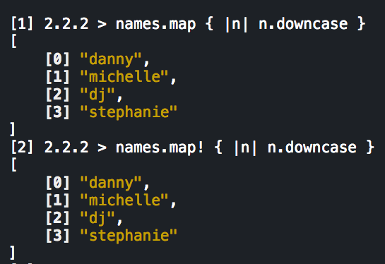

A Programmer's Best Friend
Collecting and processing data is important in Ruby. The map method is an extremely powerful method in Ruby. To fully understand how the map method works, it helps to know a little bit about classes and modules.
Class
Ruby is a class-based object oriented programming language. A class is essentially the original template from which individual objects are created. It allows you to group together methods so that objects can act in similar ways. Every object is an instance of a class. Classes are also objects which belong to the Class class.
Module
Modules group together classes, methods, and constants.They do not have instances, and the properties of a module can be added to a class or object. When a module is mixed into a class, it is often referred to as a "mix-in". The instance methods defined in the module can be retrieved by the instances of the class.
Enumerable Module
If a class wants to use the Enumerable module, it must define the each method. The Enumerable module will give all the objects of the class the properties described by each. To view all the methods in the Enumerable method you can simply type Enumerable.instance_methods.sort into the terminal. You will see the following:
Enumerable#map Method
The map method will go through an array, one element at a time. The element gets processed through the code block, and a new array is returned. In contrast, the each method returns the original object, its receiver.
Let's start out with an array called numbers. First we perform the map method, and then the each method on this array.

The results show that the numbers in the array are cycled through, and each number is multiplied by 4. With the map method, we get the creation of a brand new array that contains the results of each number multiplied by 4. On the other hand, with the each method, we simply get back the original array.
In another example, we have an array called names which contains four names in all capital letters. The map and map! methods are both applied to the array. Each string in the array becomes lowercase. While the results produce what appears to be the same output, the map! method is called a destructive method. This means it will permanently change the existing array. The map method is nondestructive. It will make changes to a copy of the original array.
